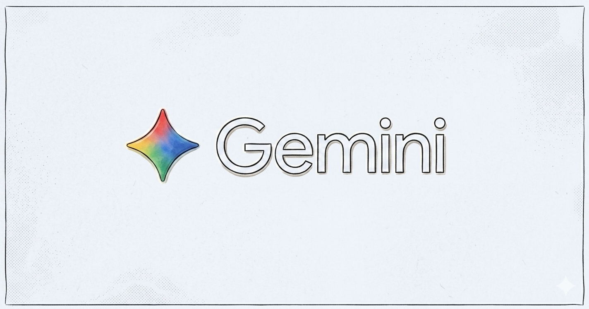

今回のツールはこちら
Gemini

私が便利だと感じているツールの一つがGoogleのAIサービス「Gemini」です。 Geminiは質問への回答だけでなく、文章作成やアイデア出し、学習のサポートなど幅広い用途で活用できます。
例えばレポートの構成を考えたり、プログラミングのコード例を調べたりするときに役立ちます。 分からないことを自然な文章で質問できるため、検索エンジンとは異なる形で情報を得ることができます。
また、文章の要約や改善案の提案も行えるため、学習効率の向上にもつながります。 授業の復習や課題作成の補助として活用できる便利なツールです。
ただし、AIが生成した情報には誤りが含まれる場合もあるため、 最終的には自分で内容を確認しながら利用することが大切です。
ChatGPT
ChatGPTもGeminiと同様に、日常の学習で活用しているAIツールです。 自然な対話形式で質問できるため、専門的な内容でも分かりやすい言葉に言い換えてもらうことができます。
レポートの下書きを作成したり、英文の添削を依頼したりする際にも役立っています。 自分の考えを整理する壁打ち相手としても便利です。
こちらもGemini同様、出力内容をそのまま鵜呑みにせず、 自分で裏付けを取ることを心がけています。
Notion
Notionは授業のノートや課題管理をまとめて行えるツールです。 ページを自由に階層化できるため、科目ごとにノートを整理しやすいのが魅力です。
テンプレート機能を使えば、毎回のノート作成の手間を減らすことができます。 タスク管理機能もあるため、課題の締め切り管理にも活用しています。
スマートフォンとパソコンで同期できるので、 授業中でも自宅でも同じ内容を確認できるのも便利な点です。
Googleカレンダー
Googleカレンダーは授業やアルバイト、サークル活動などの予定を一括で管理するために使っています。 色分け機能を使うことで、予定の種類を一目で把握できます。
通知機能を設定しておくことで、課題の提出期限や試験日を忘れずに済むようになりました。 予定を共有できるため、友人とのグループ活動にも便利です。
紙の手帳と違い、予定の変更や検索が簡単にできる点も気に入っています。